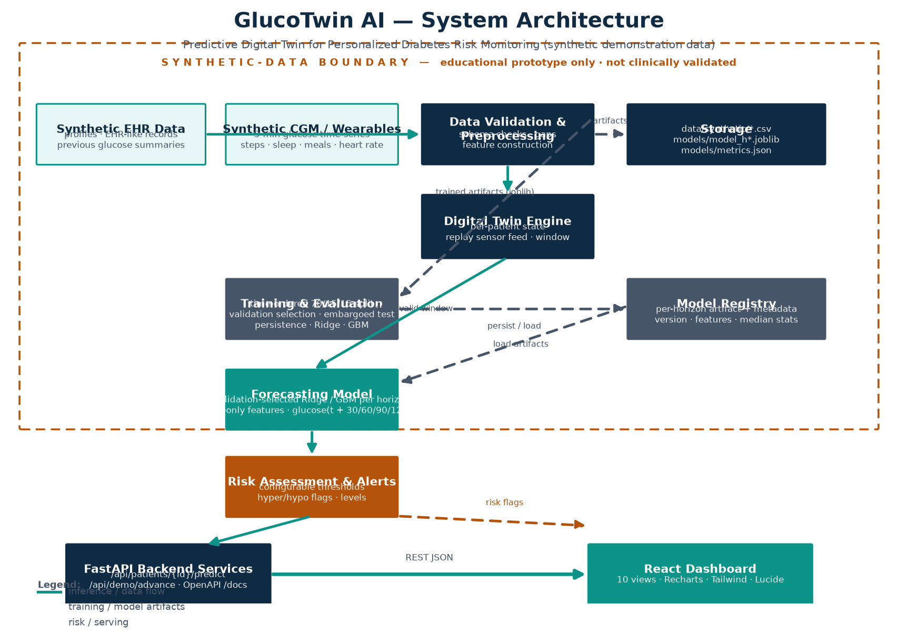

People act on glucose readings that are already in the past.
Continuous glucose monitors report *today's* value. By the time a person reacts,
their glucose has moved on — so decisions are reactive, not preventive.
5 min
sensor cadence
Current value is already 5 minutes old
Trend arrows are coarse
2–4 h
action lead time
Meals/insulin act over hours
Need to act *before* a rise or drop
static
thresholds
Fixed cut-offs ignore context
One-size-fits-all risk advice
The gap: no per-patient "living model" that forecasts the near future and
translates it into an actionable risk level.
02 · Idea
A digital twin that is you — updated every 5 minutes.
Build a per-patient state (the twin) that ingests live CGM/wearable data,
forecasts glucose at four horizons, and flags risk *before* thresholds are crossed.
"Not just *where am I now*, but *where am I heading?*"
03 · Architecture
Pipelines, engine, model, API, dashboard.

Synthetic data → validation → digital-twin engine → GBM forecaster → risk service →
FastAPI → React dashboard. Training artifacts (joblib + metrics) persist in a model registry.
04 · The twin engine
A patient's state: live, windowed, replays.
State snapshot
Replays the sensor stream in 5-min steps
Keeps the latest valid 12-row (60 min) window
Handles dropped readings gracefully with NaN
What-if: mutate carb/insulin/sleep and re-forecast
Demo behaviour
/demo/advance steps the twin through time
Each step re-computes forecast + risk
Full provenance: which rows, which features
Interactive "Advance (20 min)" button in the UI
Deterministic, seeded, reproducible — same twin for the same person every run.
05 · Forecasting model
A validation-selected Ridge or GBM per horizon — and honest baselines.
4
horizons
+30 · +60 · +90 · +120 min
independent, tuned per horizon
30 past-only features, as-of summary data
2
reference baselines
persistence (carry-forward)
Ridge regression
validation-selected GBM or Ridge
70/15/15
time-ordered train/validation/test split
train on earliest weeks of series
test on the newest
no random shuffle — no lookahead
Feature engineering documented in docs/features.md; leakage checks are unit-tested.
06 · Results (held-out synthetic test)
Selected models beat persistence on synthetic test data.
Horizon
Selected MAE
Persistence MAE
Selected RMSE
Improvement vs persistence
+30 min
4.726 mg/dL
7.141
6.381
33.8%
+60 min
5.114 mg/dL
11.004
6.595
53.5%
+90 min
5.264 mg/dL
14.234
6.805
63.0%
+120 min
5.070 mg/dL
16.449
6.556
69.2%
On this synthetic test segment the selected forecaster lowers MAE versus persistence;
these results do not establish clinical accuracy or real-world coverage.
07 · Risk assessment
A risk flag the person can act on early.
Configurable thresholds
Hypo 70 / critical 54 mg/dL
Hyper 180 / critical 250 mg/dL
Loaded from JSON — ops-tunable at runtime
Risk level: low / medium / high + kind + message
Forecast-driven
Score reviews the *predicted horizon*, not just today